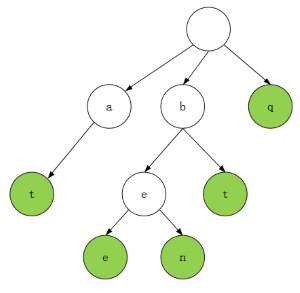

题目描述
哦，不！你不小心把一个长篇文章中的空格、标点都删掉了，并且大写也弄成了小写。像句子”I reset the computer. It still didn’t boot!”已经变成了”iresetthecomputeritstilldidntboot”。在处理标点符号和大小写之前，你得先把它断成词语。当然了，你有一本厚厚的词典dictionary，不过，有些词没在词典里。假设文章用sentence表示，设计一个算法，把文章断开，要求未识别的字符最少，返回未识别的字符数。
示例：
输入：
dictionary = [“looked”,”just”,”like”,”her”,”brother”]
sentence = “jesslookedjustliketimherbrother”
输出： 7
解释： 断句后为”jess looked just like tim her brother”，共7个未识别字符。
提示：
- 0 <= len(sentence) <= 1000
- dictionary中总字符数不超过 150000。
- 你可以认为dictionary和sentence中只包含小写字母。
动态规划
这里采用动态规划，创建一个数组 dp 用来记录结果。句子从前往后看，其中 dp[0]=0 表示句子是空字符串时没有未识别的字符，dp[i] 表示句子前 i 个字符中最少的未识别字符数。然后来找状态转移方程。对于前 i 个字符，即句子字符串的 [0,i)，它可能是由最前面的 [0,j) 子字符串加上一个字典匹配的单词得到，也就是 dp[i]=dp[j], j < i；也可能没找到字典中的单词，可以用它前 i - 1 个字符的结果加上一个没有匹配到的第 i 个字符，即 dp[i] = dp[i-1] + 1。要注意的是，即使前面存在匹配的单词，也不能保证哪一种剩下的字符最少，所以每轮都要比较一次最小值。
1 | public int respace(String[] dictionary, String sentence) { |
复杂度分析
- 时间复杂度：Ο(n²)，其中 n 是字符串长度。
- 空间复杂度：O(n)，其中 n 是字符串长度，保存dp的中间值。
字典树
这里重点讲述Trie字典树的解法。首先看一个字典树的例子：

该树包含的单词集合为 {“at”, “bee”, “ben”, “bt”, “q”}。每一个节点保存一个字符，因为题目说只包含小写字母，所以一个节点最多可以有 26 个子节点。每次查找单词都从空白的根节点开始，比如查找单词 “cat”，第一个字符 ‘c’ 就不存在，直接返回 false；查找单词 “bee”，根节点下有 b，b 的子节点有 e，下面还有 e 所以查到了。但是如果查找单词”be”,同样的方法 ‘b’ 和 ‘e’ 都存在，但是字典里没有 “be” 这个单词，所以在树里还需要一个 boolean 变量表示当前节点是不是一个单词的结尾，如图绿色表示。如果往字典中插入一个 “be” 单词，此时 b 节点下的 e 节点也应该标绿，此时再查找 “be”，在 e 节点发现它是个单词，所以返回 true。
使用字典树可利用字符串的公共前缀来减少查询时间，最大限度地减少无谓的字符串比较。
1 | public int respace(String[] dictionary, String sentence) { |
来源
文章标题：恢复空格
文章作者：cylong
文章链接：http://www.cylong.com/blog/2020/07/09/re-space-lcci/
有问题或者建议欢迎在下方评论。欢迎转载、引用，但希望标明出处，感激不尽(●’◡’●)